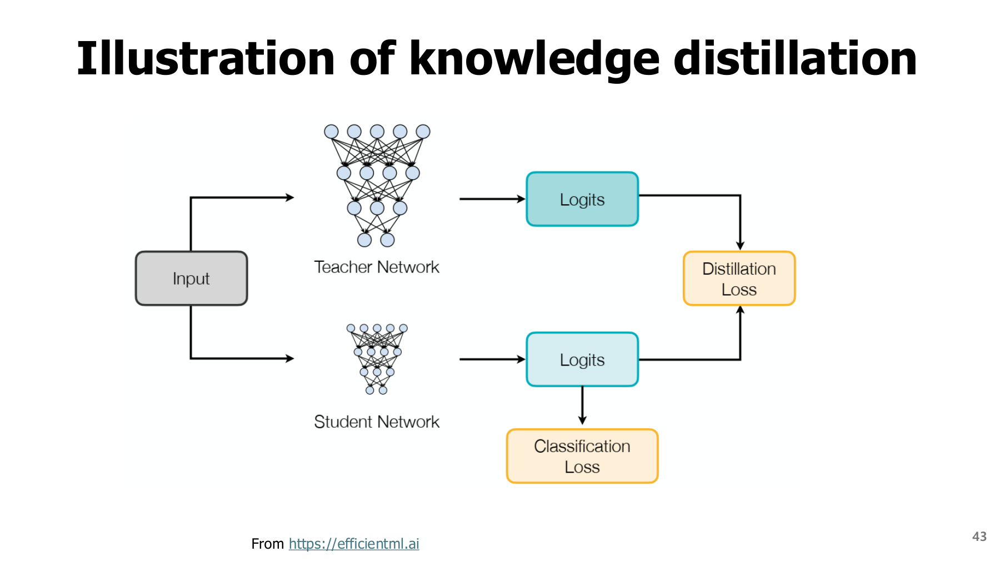
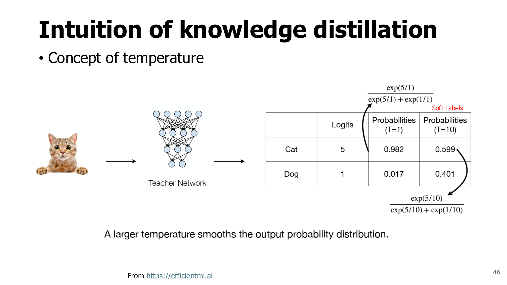
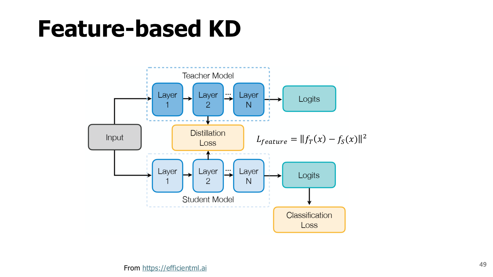
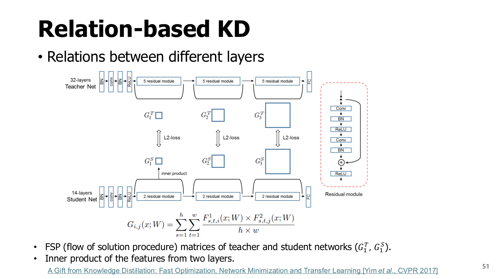
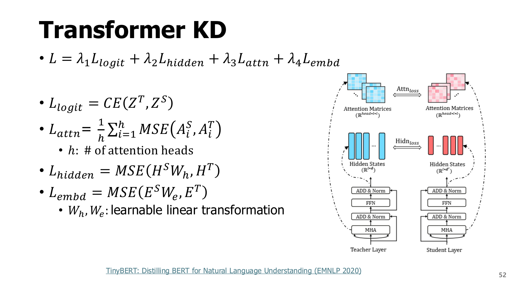
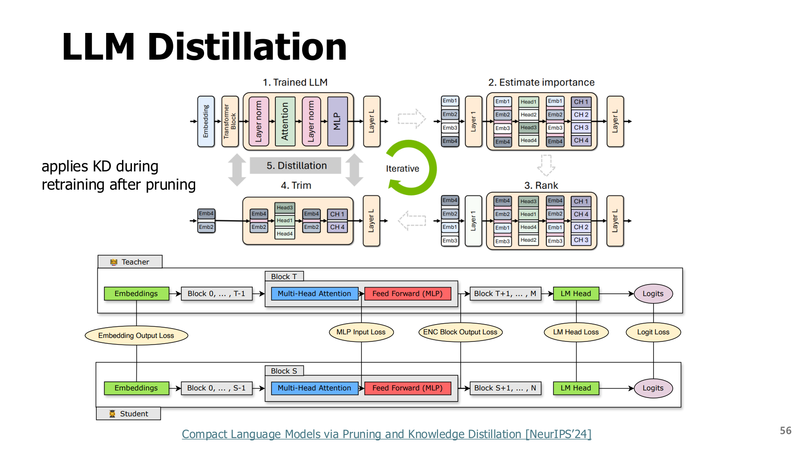

4. 지식 증류: 작은 모델에 무엇을 가르칠까?
학습 안내 · 이전 · 다음: attention과 KV
원본 범위: p.40-56
학습 목표
- 정답 한 개와 교사의 확률분포가 주는 정보 비교하기
- 출력·중간 표현·관계 증류 구분하기
- 교사의 응답만 얻을 때 가능한 학습과 불가능한 계산 설명하기
시작 전 준비
| 용어 | 쉬운 뜻 |
|---|---|
| 클래스 | 분류할 후보 종류. 예: 고양이·개·자동차 |
| 확률분포 | 후보별 가능성을 0~1로 나타낸 값들의 모음. 합은 1 |
| Logit | 확률로 변환하기 전 모델이 낸 점수 |
| Softmax | 점수들을 양수로 바꾸고 합이 1이 되도록 정규화하는 함수 |
| 중간 표현(feature) | 모델 내부 층에서 계산한 특징 값 |
| 업데이트 | 손실을 줄이는 방향으로 학습 가능한 숫자를 조정하는 것 |
이 장의 비유: 정답만 알려주는 교사와 “어떤 오답이 정답에 더 가까운지”까지 알려주는 교사를 비교해 본다. 실제 증류가 교사의 사고 과정을 그대로 복사한다는 뜻은 아니다.
4.1 정답만으로 배우기 어려운 작은 모델 - p.40-43
지식 증류(Knowledge Distillation, KD)는 교사 모델의 출력이나 중간 표현을 학습 신호로 사용해 학생 모델을 훈련하는 방법이다.
| 역할 | 하는 일 | 사용 시점 |
|---|---|---|
| 교사(teacher) | 학생이 참고할 예측·표현 제공 | 학습 과정 |
| 학생(student) | 정답과 교사의 정보를 참고해 가중치 조정 | 학습 및 배포 |
배포할 때는 보통 학생만 실행한다. 교사의 가중치를 그대로 복사하는 작업과는 다르다.
교안의 깊은 네트워크(Deep Network) → 더 얕은 네트워크(Shallower Network)는 큰 교사의 판단을 더 가벼운 학생에게 전달하는 대표 예다. 예를 들어 층 수가 적은 학생도 “정답 후보가 무엇인지”뿐 아니라 “다른 후보 중 무엇이 상대적으로 그럴듯한지”를 학습할 수 있다. 교사의 층을 앞에서부터 잘라내 복사해야 하는 것은 아니며, 폭이 좁은 학생이나 다른 구조에도 증류를 적용할 수 있다. 지식 증류 원 논문은 여러 모델의 지식을 하나의 배포하기 쉬운 모델로 옮기는 관점을 제시한다.
왜 작은 모델에 교사가 필요한가? — p.40-42
- 문제: 작은 모델은 표현할 수 있는 능력과 학습 과정의 제약 때문에 품질이 낮을 수 있다.
- 접근: 큰 모델 또는 여러 모델의 예측을 참고해 학습 목표를 풍부하게 만든다.
- 한계: 교사의 오류도 배울 수 있다. 학생의 용량·데이터·교사의 품질에 따라 효과가 달라진다.
원문 p.41의 정확도 차이는 해당 모델과 학습 조건의 사례다. 증류로 학생이 항상 교사를 능가하는 것은 아니다.


그림 읽기: 두 가지 학습 신호
- 같은 입력을 교사와 학생에게 넣는다.
- 학생의 출력과 실제 정답을 비교한다 → 분류 손실.
- 학생의 출력과 교사의 출력을 비교한다 → 증류 손실.
- 두 신호를 함께 사용해 학생의 가중치를 조정한다.
교사는 보통 고정하고 학생을 학습한다. 아래 수식은 학습 목표를 설명하며 전체 학습 프로그램은 아니다.
4.2 Hard label과 soft label, temperature - p.44-47
KD의 형식적 정의(Formal Definition of KD)를 말로 읽기: 같은 입력에 대해 교사와 학생이 클래스별 점수를 만들고, 같은 온도로 확률분포로 바꾼 뒤, 학생의 분포가 교사의 분포에 가까워지도록 학생을 학습한다. 정답이 있으면 다음 절의 정답 손실과 함께 사용한다.
로짓(Logits)은 확률로 바꾸기 전의 점수로, 음수도 가능하고 합이 1일 필요도 없다. 확률(Probabilities)은 소프트맥스(Softmax)를 거친 비음수 값으로 전체 합이 1이다. 온도(Temperature)는 확률 자체가 아니라 로짓을 나누는 값이다. 교안 p.44의 문장은 “softmax가 logits를 확률로 변환한다”로 읽는다. 클래스가 C개일 때 $z\in\mathbb R^C$를 확률로 바꾸는 식은 다음과 같다.
Temperature(온도) T의 역할
| 설정 | 점수 차이에 미치는 효과 | 확률분포 |
|---|---|---|
| $T=1$ | 원래 차이 유지 | 기본 softmax |
| $T>1$ | 차이를 작게 만듦 | 덜 뾰족하고 부드러움 |
| 매우 큰 T | 차이가 거의 사라짐 | 거의 균등해짐 |
- $C$: 클래스 수, $z_i$: i번째 클래스의 점수.
- $\exp(a)=e^a$: 음수 점수도 양수로 바꾸는 지수함수.
- 분모: 모든 후보의 지수값 합. 이 값으로 나누면 전체 확률의 합이 1이 된다.
수치 계산: 최대 logit을 모든 logit에서 뺀 뒤 계산하면 큰 수로 넘치는 overflow를 줄일 수 있다. 같은 상수를 빼도 최종 확률은 같다.
학생이 받는 정보 비교
| 종류 | 고양이 | 개 | 자동차 | 전달하는 정보 |
|---|---|---|---|---|
| Hard label 예 | 1 | 0 | 0 | 고양이가 정답 |
| Soft label 예 | 0.7 | 0.2 | 0.1 | 정답 외 후보의 상대적 가능성 |
위 숫자는 교육용 예시다. 교사가 개에 자동차보다 높은 확률을 주었다면 학생은 그 차이도 참고한다. 비정답 후보 사이의 상대 정보가 dark knowledge다.
한계: 이 확률은 교사의 판단이다. 실제 유사성이나 정답을 항상 보장하지 않는다.


그림 읽기
- 원문 점수는 고양이 5, 개 1이다.
- T=1: 고양이에 약 0.982, 개에 약 0.018.
- T=10: 고양이에 약 0.599, 개에 약 0.401.
- 볼 점: 순위는 그대로지만 작은 확률의 후보가 더 드러난다.
아래 표는 계산을 연습하도록 별도로 만든 3클래스 예제다. 원문 그림의 숫자와 섞지 않는다.
교육용 계산: 교사 logit을 [2,1,0]으로 두면 다음과 같다. 원문 동물 그림의 실제 수치를 재현한 것은 아니다.
| 온도 | 지수 계산의 상대 입력 | 정규화 후 확률 |
|---|---|---|
| $T=1$ | [0,-1,-2] |
[0.665241,0.244728,0.090031] |
| $T=2$ | [0,-0.5,-1] |
[0.506480,0.307196,0.186324] |
표 해석
- 마지막 클래스: 약 0.090 → 0.186으로 확률이 커진다.
- 첫 클래스: 약 0.665 → 0.506으로 확률이 낮아진다.
- 순위: 양의 온도로 나누므로 원래 logit의 순위는 유지된다.
학습으로 연결하기: 교사와 학생의 로짓을 같은 온도로 각각 변환해 두 확률분포를 비교한다. 정답 손실은 보통 온도 1에서 계산하고, 증류 손실에는 선택한 온도를 사용한다. 교사는 보통 고정한 채 학생만 갱신한다. p.46 그림에서 드러난 작은 확률의 후보들이 이때 추가 학습 신호가 된다. 학습을 마친 학생은 일반적으로 온도 1의 출력으로 평가하며, 증류 때의 높은 온도를 그대로 유지해야 하는 것은 아니다.
온도를 계속 높이면 거의 균등해져 구분 정보가 약해질 수 있다. 증류에서 학습 신호를 만드는 온도와 실제 응답 생성의 sampling 온도는 목적이 다르다.
4.3 Response-based KD와 KL 방향 - p.48
먼저 말로 읽는 손실식
학생은 실제 정답을 맞히는 일과 교사의 분포를 따르는 일을 함께 배운다.
| 식의 구성 | 뜻 |
|---|---|
| CE | 정답에 낮은 확률을 주면 커지는 손실 |
| KL | 교사와 학생의 확률분포 차이를 비교하는 값 |
| $\alpha$ | 정답 손실에 줄 비중 |
| $1-\alpha$ | 증류 손실에 줄 비중 |
| $T^2$ | 온도에 따라 작아지는 학습 신호의 크기를 보정하는 계수 |
심화: 혼합 손실과 계산
Response-based KD는 최종 예측 분포를 맞춘다. 정답 $y$, 학생 logit $z_S$, 교사 logit $z_T$, 정답 손실 비중 $\alpha\in[0,1]$에 대해 원문의 혼합 손실은 다음처럼 정리할 수 있다.
CE와 KL을 읽는 방법
- CE(cross entropy, 교차 엔트로피): hard label에서는 $-\log p_S(y)$. 학생이 정답 y에 큰 확률을 줄수록 작아진다.
- KL: 이 식에서는 교사 $p_T$를 기준으로 학생 $p_S$와의 차이를 계산한다.
- 방향: $KL(p_T\|p_S)$와 $KL(p_S\|p_T)$는 일반적으로 값과 학습 효과가 다르다.
- 로그: 이 장의 손실 계산은 자연로그 $\log=\ln$을 사용한다.
원문 p.48의 forward/reverse KL 설명은 분포를 맞추는 경향의 직관이다. 모든 신경망에서 동일한 학습 결과를 보장한다는 의미는 아니다.
구현에서 함께 정할 것
- 온도와 혼합 비중 $\alpha$
- 클래스·토큰 손실을 더할지 평균낼지 정하는 reduction
- 고정 교사의 계산이 학생 업데이트에 포함되지 않도록 하는 처리
$T^2$ 보정만으로 모든 설정의 손실 크기가 같아지지는 않는다. 구현 예시는 PyTorch 공식 증류 튜토리얼을 참고한다. 이 문서에서는 해당 전체 학습을 실행하지 않았다.
교육용 손실 검산: $p_T=[0.7,0.2,0.1]$, $p_S=[0.6,0.3,0.1]$이면 KL은
T=1, 정답 첫 클래스, $\alpha=0.5$라면 CE는 $-\log0.6\approx0.510826$, 혼합 손실은 약 0.268819다. KL이 작다는 것만으로 학생의 정답 정확도를 모두 설명할 수는 없다.
4.4 Feature·relation 증류는 무엇을 맞출까? - p.49-51
세 방식의 차이부터 보기
| 방식 | 비교 대상 | 학생에게 요구하는 것 |
|---|---|---|
| Response | 최종 예측 분포 | 답의 확률을 비슷하게 만들기 |
| Feature | 중간 층의 표현 | 중간에 계산한 특징을 비슷하게 만들기 |
| Relation | 특징 사이의 관계 | 특징들이 연결되는 방식을 비슷하게 만들기 |
Feature-based KD: 중간값 맞추기
차원이 같다면 $L_{feat}=\|F_T-F_S\|_2^2$처럼 차이의 제곱합을 사용할 수 있다.
- $F_T$: 교사의 중간 표현
- $F_S$: 학생의 중간 표현
- 차원이 다를 때: 학습 가능한 변환 $g(F_S)$를 두어 비교 가능한 모양으로 맞춤


그림 읽기
- 파란 점선 상자: 교사와 학생의 중간 층.
- 가운데 연결선: 최종 logit이 아닌 중간 특징을 비교하는 위치.
- 아래 분류 손실: 학생이 실제 정답도 배우도록 하는 신호.
- 비교 질문: 4.1의 출력 증류 그림과 손실 연결 위치가 어떻게 다른가?
p.50의 hint layer는 교사가 안내하는 중간 layer, guided layer는 이를 따라 배우는 학생 layer다. 정정·주의: 슬라이드 제목은 “Matching intermediate weights”지만 본문과 FitNets 그림의 대상은 중간 특징/activation이다. 교사·학생의 가중치 원소를 직접 동일하게 만드는 것으로 해석하지 않는다.
Relation-based KD: 특징 사이의 관계 맞추기 — p.51
FSP(Flow of Solution Procedure)는 서로 다른 두 층의 특징을 내적으로 비교해 관계 행렬을 만든다.
교육용 표기
| 기호 | 의미 |
|---|---|
| $S$ | 비교할 공간 위치 수 |
| $F^{(1)}\in\mathbb R^{S\times c_1}$ | 첫 층의 특징 |
| $F^{(2)}\in\mathbb R^{S\times c_2}$ | 둘째 층의 특징 |
| $G\in\mathbb R^{c_1\times c_2}$ | 두 층의 채널 사이 관계를 모은 행렬 |


그림 읽기
- 층의 특징 → 관계 행렬 G 생성 → 교사·학생의 G 비교 순서로 읽는다.
- Feature KD는 특징 값, relation KD는 특징 사이의 관계를 비교한다.
- 공간 위치와 교사·학생의 비교 모양이 맞아야 한다.
중간 특징과 관계를 저장·계산하는 학습 비용이 추가된다.
4.5 Transformer 증류 - p.52-53
Transformer에서는 출력 logit 외에 hidden state, attention map, embedding을 맞출 수 있다. 원문 TinyBERT 예시는 이 손실을 가중합한다.
차원 맞추기
- $\lambda_i$: 손실 항목별 비중
- B: 한 번에 처리할 입력 수인 batch
- L: 토큰 길이
- $d_S,d_T$: 학생·교사의 중간 표현 폭
학생 $H_S\in\mathbb R^{B\times L\times d_S}$에 $W_h\in\mathbb R^{d_S\times d_T}$를 곱하면 교사의 폭에 맞출 수 있다.
| 비교 대상 | 맞춰야 할 것 |
|---|---|
| Hidden state | 토큰 위치·표현 폭 |
| Attention map | head 수·토큰 위치. 예: [B,heads,L,L] |
| 서로 다른 층 수 | 어느 학생 층을 어느 교사 층과 비교할지 |
MSE(평균 제곱 오차)는 대응하는 값들의 차이를 제곱해 평균한 손실이다.


그림을 왼쪽 식에서 오른쪽 대응선으로 읽으며 학생의 어떤 값이 교사의 어떤 값과 비교되는가를 찾는다. 원문의 CE(ZT,ZS)는 logit 표기를 간략화한 것이다. logit을 확률이나 log-probability로 바꾸고 어느 방향 CE/KL을 적용하는지 정해야 하며, 임의 실수 logit을 그대로 정답 확률로 넣지 않는다.
p.53의 MobileBERT는 교사와 학생의 표현 크기를 맞추는 설계 사례다. “크기가 같은 feature”를 이용하는 특정 구성이지, 모든 작은 Transformer가 교사와 같은 차원을 가져야 한다는 규칙은 아니다.
4.6 LLM: 토큰 분포, 생성 응답, 학생 경로 - p.54
LLM 용어 준비
- 어휘(vocabulary): 모델이 선택할 수 있는 토큰의 전체 목록.
- Tokenizer: 글을 토큰으로 나누고 번호로 바꾸는 규칙.
- Prefix: 다음 토큰을 예측할 때 이미 주어진 앞부분.
- Black-box 교사: 내부 점수 없이 생성된 응답만 얻을 수 있는 경우.
- SFT: 입력과 모범 응답의 짝으로 수행하는 지도 미세조정.
| 방식 | 학생에게 주는 정보 | 필요한 교사 접근 | 주의할 차이 |
|---|---|---|---|
| Token-level KD | 각 위치의 어휘 확률분포 | logits 또는 충분한 확률 정보 | 어휘·tokenizer·prefix 정렬, 큰 logits 비용 |
| Sequence/response KD | 교사가 생성한 응답 문자열·token열 | 텍스트 응답만으로도 가능 | 응답을 모방하며 전체 교사 분포는 보지 못함 |
| On-policy KD | 학생이 생성한 prefix에 대한 교사 평가 | 해당 prefix를 평가할 교사 | 학생이 실제 방문하는 상태를 학습, 추가 생성 비용 |
| Reasoning distillation | 풀이 과정·추론 궤적 등의 지도 신호 | 과정이 포함된 데이터 | 장문의 그럴듯한 오류·검증 비용 |
심화: 두 학습 목표
| 구분 | 목표 |
|---|---|
| Token-level | 같은 앞부분에서 다음 토큰의 전체 분포 맞추기 |
| Sequence-level | 교사가 만든 특정 응답열의 확률 높이기 |
Token-level의 한 표현은
이고, 교사 응답 $\hat y$를 사용하는 sequence-level은
위 식에서 $y_{<t}$는 t번째 토큰 앞의 prefix, 점 $\cdot$는 어휘의 모든 후보를 뜻한다.
왜 학생이 만든 앞부분에서도 배울까?
- 학습 중: 정답 또는 교사가 만든 앞부분을 자주 본다.
- 실제 생성 중: 학생이 스스로 만든 앞부분을 본다.
- 차이: 학생의 작은 실수 뒤에 이어지는 문맥이 학습 때와 달라질 수 있다. 이를 exposure bias와 연결해 설명한다.
On-policy KD는 학생이 만든 prefix에 대한 교사의 평가를 학습에 반영한다.
정보 접근의 한계
- 응답 문자열만 있는 API가 임의 prefix의 전체 확률도 제공한다고 가정하지 않는다.
- Tokenizer가 다르면 어휘 번호별 KL을 바로 계산할 수 없다.
4.7 가지치기와 증류 결합 - p.55-56
원문은 큰 모델에서 작은 모델로 구조를 줄이고 재학습 과정에 증류를 결합하는 사례를 보여준다. 가지치기는 구조를 바꾸는 단계, 증류는 남은 학생을 학습시키는 신호다. 같은 방법을 두 번 부르는 것이 아니다.


그림은 모델에서 중요도 평가 → 순위화 → 제거 → 재학습의 흐름을 보고, 아래 학습 흐름에서 교사 신호가 들어오는 위치를 찾는다. p.55 그래프의 점은 각 모델·학습 조건의 비교다. 파라미터 수만 같으면 같은 품질이라는 의미로 일반화하지 않는다.
4.8 요약과 확인 질문
작은 모델에 전달할 지식은 정답, 출력 분포, 중간 표현, 관계, 생성 응답 등으로 나뉜다. 학생이 무엇을 관측할 수 있는가가 가능한 손실을 제한한다. 다음 장에서는 학습된 모델을 실행할 때 어떤 토큰·KV를 덜 처리할지 다룬다.
- T를 1에서 2로 높이면 위
[2,1,0]예제의 마지막 클래스 확률은 어떻게 되는가? - 교사의 응답 문자열만 있다. 전체 vocab의 token-level KL을 정확히 계산할 수 있는가?
- 학생 hidden 폭이 384, 교사가 768이면 직접 MSE를 적용하기 전에 무엇이 필요한가?
- 교사 logit을 복사해두는 것만으로 학생이 자동으로 작아지는가?
해설과 돌아갈 위치
- 약 0.090031에서 0.186324로 커진다. 가장 높은 클래스 확률은 낮아져 분포가 부드러워진다. 4.2를 확인한다.
- 아니다. 생성된 한 응답은 각 위치의 전체 분포가 아니다. response KD로 학습할 수 있지만 같은 손실은 아니다. 4.6으로 돌아간다.
- 대응 layer·위치를 정하고 384→768 projection을 적용하거나 비교 가능한 다른 손실을 설계해야 한다. 4.5를 확인한다.
- 아니다. 작은 학생 구조와 학습 과정이 필요하다. 교사 신호는 학습 목표이며 크기 감소 연산 자체가 아니다. 4.1·4.7을 확인한다.